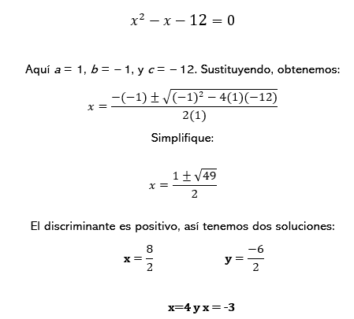

DISCRIMINANTE
En precálculo, el discriminante es un término utilizado en la resolución de ecuaciones cuadráticas. Es una fórmula que nos permite determinar el número y tipo de soluciones que tiene una ecuación cuadrática. El discriminante se calcula utilizando la fórmula:
Discriminante (D) = b^2 - 4ac
Donde "a", "b" y "c" son los coeficientes de la ecuación cuadrática en la forma estándar ax^2 + bx + c = 0.
El valor de la discriminante nos da información importante sobre las soluciones de la ecuación cuadrática:
- Si el discriminante es positivo (D > 0): La ecuación tiene dos soluciones reales y distintas. Esto es porque el discriminante representa el área del cuadrado de un binomio, y si el valor es positivo, significa que el binomio se puede factorizar en dos binomios distintos.
- Si el discriminante es igual a cero (D = 0): La ecuación tiene una única solución real. Esto sucede cuando el binomio se puede factorizar en dos binomios idénticos.
- Si el discriminante es negativo (D < 0): La ecuación no tiene soluciones reales. Esto se debe a que el binomio no puede ser factorizado en binomios reales. Sin embargo, las soluciones pueden ser números imaginarios o complejos.
El cálculo de la discriminante es una herramienta útil cuando se desea determinar el tipo de soluciones de una ecuación cuadrática.
Ejemplo:
En este ejemplo, el discriminante fue 49, un cuadrado perfecto, así terminamos con respuestas racionales. A menudo, cuando se utiliza la fórmula cuadrática, puede terminar con respuestas que todavía contendrán radicales.